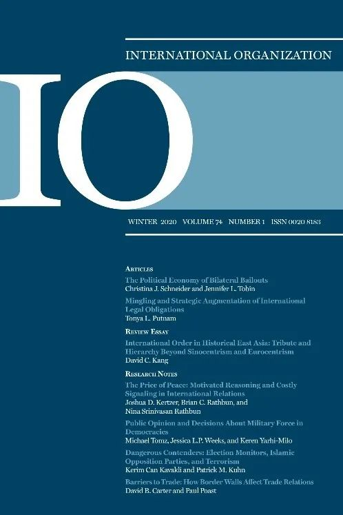

收录于合集 #新刊速递 123个
期刊简介

International Organization（《国际组织》），简称“IO”，是一份经过同行评议的季刊，涵盖国际事务的领域包括：外交政策、国际关系、国际与比较政治经济学、安全政策、环境争端与解决、欧洲一体化、联盟模式与战争、谈判与冲突解决、经济发展与调整、国际资本流动等。它成立于1947年，由剑桥大学出版社代表国际组织基金会出版，主编是乔治城大学的Erik Voeten。根据Journal Citation Reports显示，2018年其影响因子为4.508，在91个国际关系类期刊中排名第1，在176个政治科学类期刊中排名第1。
本期编委
【 编译 】刘瑛琛 张曼娜 房宇馨 贺凡熙 张晋岚
【 校对 】金琳
【 审核 】 金磊
【排版】 赵怡雯
本期目录
**1. The Political Economy of Bilateral Bailouts
**
双边援助的政治经济学
**
**
2. The Price of Peace: Motivated Reasoning and Costly Signaling in International Relations
和平的代价：国际关系中的动机性推理和高成本信号
**
**
3. Public Opinion and Decisions about Military Force in Democracies
民主国家的公共舆论与军事决策
**
**
4. Dangerous Contenders: Election Monitors, Islamic Opposition Parties, and Terrorism
危险的竞争者：选举监督者、伊斯兰反对党和恐怖主义
**
**
5. Barriers to Trade: How border walls affect trade relations
贸易壁垒：边境墙如何影响贸易关系
1.
双边援助的政治经济学
【 题目 】The Political Economy of Bilateral Bailouts
【 作者 】Christina J. Schneider，加州大学圣迭戈分校教授；Jennifer L. Tobin，乔治城大学麦考特公共政策学院公共政策专业副教授。
【 摘要 】
国际货币基金组织在金融危机期间的贷款常常与双边金融援助一同出现。这些双边援助规模庞大，是金融危机期间国际合作的重要组成部分。作者分析了双边援助的政治经济学，并研究了当其他国家陷入财务困境时潜在债权国政府可能的妥协。债权国政府想要通过提供额外流动性的方式稳定发生危机的国家（特别是发生危机的国家在政治上或经济上对其具有重要意义时），但它们却被国内政治所束缚。政客们旨在平衡这些反对力量。当自身经济面临负溢出效应或者发生危机的国家在地缘战略、军事或政治上具有重要性时，政客们会提供援助。但另一方面，国内的经济和政治束缚也限制了他们援助他国的能力。作者使用一个原始数据集验证了其假设，该数据集涵盖了G7国家对1975年到2010年期间经历了金融危机的国家所进行的双边援助。作者的统计分析支持了其理论主张，并有利于更加深入地理解金融危机期间国际合作的复杂结构。
IMF loans during times of financial crisis often occur in conjunction with bilateral financial rescues. These bilateral bailouts are substantial in size and a central component of international cooperation during financial crises. We analyze the political economy of bilateral bailouts and study the trade- offs that potential creditor governments experience when other countries find themselves in financial distress. Creditor governments want to stabilize crisis countries by providing additional liquidity, particularly if the crisis country is economically or politically important to them, but they are constrained by domestic politics. Politicians aim to balance these countervailing pressures. They provide bailouts when their own economy is exposed to negative spillover effects and when the crisis country is important for geostrategic, military, or political reasons. Domestic economic and political constraints, on the other hand, limit their ability to bail out other countries. We test our hypotheses using an original data set on bilateral bailouts by the G7 countries to countries that experienced financial crises between 1975 and 2010. The findings of our statistical analysis support our theoretical argument and contribute to a deeper understanding of international cooperation’s complex structure during financial crises.
【 编译 】刘瑛琛
【 校对】金琳
【审核】金磊
2.
和平的代价：国际关系中的动机性推理和高成本信号
【 题目 】The Price of Peace: Motivated Reasoning and Costly Signaling in International Relations
【 作者 】Joshua D. Kertzer，哈佛大学政治经济学副教授；Brian C. Rathbun, 南加州大学国际关系教授；Nina
Srinivasan Rathbun，南加州大学国际关系教授。【 摘要 】在国际关系中，高成本信号（costly
signaling）的规范模型倾向于假设高成本信号具有自证性：信号的高成本性通常被理解为该信号的功能而非接收者的感知。将国际关系中的信号研究与政治心理学中的动机性怀疑主义（motivated
skepticism）和非对称更新（asymmetric
updating）相结合，作者发现个体倾向于接受与他们总体观念体系相一致的信息（并排斥与之不一致的信息），这一发现对信号的解释具有重要意义。根据伊朗在2015年达成的“联合全面行动计划”，结合两项针对美国民众的调查实验，本文发现了与动机取向怀疑论相一致的模式：最可能更新观念的个人往往最不需要安抚信号，这种情况下高成本信号会导致两极分化而非趋同。因此，成功的信号发送需要了解信号接收者的取向。
Canonical models of costly signaling in international relations (IR) tend to
assume costly signals speak for themselves: a signal’s costliness is typically
understood to be a function of the signal, not the perceptions of the
recipient. Integrating the study of signaling in IR with research on motivated
skepticism and asymmetric updating from political psychology, we show that
individuals’ tendencies to embrace information consistent with their
overarching belief systems (and dismiss information inconsistent with it) has
important implications for how signals are interpreted. We test our theory in
the context of the 2015 Joint Comprehensive Plan of Action (JCPOA) on Iran,
combining two survey experiments fielded on members of the American mass
public. We find patterns consistent with motivated skepticism: the individuals
most likely to update their beliefs are those who need reassurance the least,
such that costly signals cause polarization rather than convergence.
Successful signaling therefore requires knowing something about the
orientations of the signal’s recipient.
【 编译 】 张曼娜
【 校对】金琳
【审核】金磊
**
**
3.
民主国家的公共舆论与军事决策
【 题目 】Public Opinion and Decisions about Military Force in Democracies
【 作者 】Michael Tomz，斯坦福大学政治学系教授；Jessica L. P. Weeks，威斯康星大学麦迪逊分校政治学系副教授；Keren Yarhi-Milo，普林斯顿大学政治系副教授。
【 摘要 】
很多国际关系理论认为，在民主国家中公共舆论对外交政策会产生巨大的影响力。先前的研究基于观测数据，已经得出了关于这个基础假设的矛盾结论。本文通过实验检验“反应”和“选择”两种机制，公共舆论可以通过这两种机制塑造军事决策。实验通过展现以色列议员们对一场外交政策危机的商讨来检验“反应”机制，在这场危机中，作者对相关公共舆论的信息进行了随机化处理。实验中，议员们更愿意在公共赞成的情况下使用军事力量，并且认为违背民意将带来沉重的政治代价。作者通过展现以色列和美国公民对政党/候选人的评估来检验“选择”机制，实验中的政党/候选人的某些条件也是随机变化的。两国的选举结果表明，安全政策被证明与经济和宗教政策一样具有选举意义，并且远比性别、种族和经验等非政策因素重要。总体来看，美以两国的实验表明，公民可以通过激励现任者和塑造谁当选来影响政策。
Many theories of international relations assume that public opinion exerts a powerful effect on foreign policy in democracies. Previous research, based on observational data, has reached conflicting conclusions about this foundational assumption. We use experiments to examine two mechanisms—responsiveness and selection—through which opinion could shape decisions about the use of military force. We tested responsiveness by asking members of the Israeli parliament to consider a crisis in which we randomized information about public opinion. Parliamentarians were more willing to use military force when the public was in favor and believed that contravening public opinion would entail heavy political costs. We tested selection by asking citizens in Israel and the US to evaluate parties/candidates, which varied randomly on many dimensions. In both countries, security policy proved as electorally significant as economic and religious policy, and far more consequential than nonpolicy considerations such as gender, race, and experience. Overall, our experiments in two important democracies imply that citizens can affect policy by incentivizing incumbents and shaping who gets elected.
【 编译 】 房宇馨
【 校对】金琳
【审核】金磊
4.
危险的竞争者：选举监督者、伊斯兰反对党和恐怖主义
【 题目 】Dangerous Contenders: Election Monitors, Islamic Opposition Parties, and Terrorism
【 作者 】Kerim Can Kavakli，意大利博科尼大学政治科学助理教授；Patrick M. Kuhn，英国杜伦大学比较政治学副教授。
【 摘要 】
国际观察者如何决定是批判还是容忍一个国家的选举舞弊行为？本文认为，这一决定取决于选举舞弊受害者的身份。如果欺诈行为的对象被监督组织的赞助者认为十分危险，监督组织会对这些欺诈行为视而不见。基于这一认识，本文假设在后冷战时代，选举监督者（包括政府间和非政府组织）对针对伊斯兰挑战者的欺诈舞弊行为更为宽容，尤其是在伊斯兰教运动被视为政治稳定的威胁时。通过定量分析，作者发现外部监督者更有可能支持在伊斯兰教反对党和正在进行的伊斯兰恐怖主义运动的国家的带有舞弊情况的选举。此外，相较非西方监督组织，西方监督组织往往做出以上的决定，且这一趋势在“9·11”袭击事件后愈演愈烈。本文提供了一个简单而有力的洞见：外部观察者对一国选举的考量不仅取决于他们希望看到谁掌权，还取决于他们希望阻止谁掌权。
How do international observers decide whether to criticize or condone electoral fraud in a country? We argue that this decision depends on the identity of the victims of electoral fraud. A monitoring organization is more likely to overlook fraud committed against groups that are deemed dangerous by its sponsor. Based on this insight, we hypothesize that in the post-Cold War era election monitors are more tolerant of fraud against Islamic challengers, especially when Islamic movements are perceived as a threat to political stability. In support of our hypothesis, we find that outside monitors are more likely to endorse an election in countries with an Islamic opposition party and an ongoing Islamist terrorist campaign. Furthermore, we find that the effect is driven by Western monitoring organizations and becomes stronger after the September 11 attacks. Our findings provide a simple yet powerful insight: the calculus of outside observers depends not only on who they wish to see in power, but also who they want to keep from power.
【 编译】贺凡熙
【 校对】金琳
【审核】金磊
5.
贸易壁垒：边境墙如何影响贸易关系
【 题目】 Barriers to Trade: How border walls affect trade relations
【 作者 】David B. Carter，美国圣路易斯华盛顿大学政治学系副教授；Paul Poast，美国芝加哥大学政治学副教授
【 摘要 】
由于贸易必须跨越边界，那么边界墙在多大程度上会影响贸易流动？作者认为，边境墙可以减少贸易流动。即使边境墙的目标仅仅是阻止非法移民的流动，它也会加剧边界效应，从而也会抑制合法的跨界流动。作者利用反映经济理论和计量经济学最新发展的贸易引力模型（gravity model of trade），发现边境墙的修建与邻国之间合法贸易流动的减少相关。作者提供的一系列证据表明，这种减少并不仅仅是双边关系恶化的结果。作者的研究结果对理解在经济全球化日益加剧的时代，各国政府如何采取措施维护其边界的主权控制具有启示意义。
Since trade must cross borders, to what extent do border walls affect trade flows? We argue that border walls can reduce trade flows. Even if the objective is to only stem illicit flows, border walls heighten “border effects” that can also inhibit legal cross-border flows. Using a gravity model of trade that reflects recent developments in both economic theory and econometrics, we find that the creation of a wall is associated with a reduction in legal trade flows between neighboring countries. We provide a battery of evidence that suggests this reduction is not simply a function of worsening bilateral relations. Our findings have implications for understanding how governments have taken measures to assert sovereign control of their borders in an age of increasing economic globalization.
【 编译】张晋岚
【 校对】金琳
【审核】金磊
【新刊速递】第12期 | International Affairs, Vol.95, No.6，2019
【新刊速递】第13期|Chinese Journal of International Politics, No.4, 2019
【新刊速递】第14期|Chinese Journal of International Politics, No.3, 2019
【新刊速递】 第15期 | International Organization, No.4, 2019
【新刊速递】第16期 | International Studies Quarterly, No.4, 2019
【新刊速递】第17期 | World Politics, Vol.72, No.1, 2020
【新刊速递】 第18期 | Security Studies Vol.28, No.5, 2019
【新刊速递】第19期 | Review of International Studies, No.1, 2020
【新刊速递】第20期 | International Studies Quarterly, No.4, 2019
【新刊速递】第21期 | International Studies Quarterly, No.4, 2019
【新刊速递】第22期 | Security Studies Vol.29, No.1, 2020
【新刊速递】 第23期|Cooperation and Conflict,Vol.55, No.1, 2020
国政学人
支持学术公益与知识传播
微信扫一扫赞赏作者 __赞赏
已喜欢，对作者说句悄悄话
取消 __
发送给作者
发送
最多40字，当前共字
上一页 1/3 下一页
长按二维码向我转账
支持学术公益与知识传播
受苹果公司新规定影响，微信 iOS 版的赞赏功能被关闭，可通过二维码转账支持公众号。